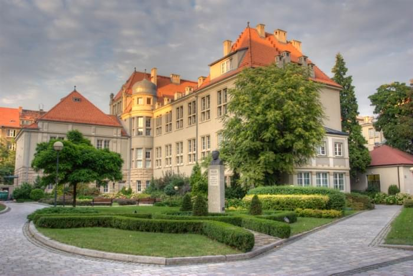

Katedra Chemii Analitycznej i Metalurgii Chemicznej

Katedra Chemii Analitycznej i Metalurgii Chemicznej - budynek A3
Kierownik Katedry: Prof. dr hab. inż. Paweł Pohl
Katedra Chemii Analitycznej i Metalurgii Chemicznej (K14W03D10)
Wydział Chemiczny
Politechnika Wrocławska
Wyb. Wyspiańskiego 27
53-370 Wrocław
tel. 071 320 24 94